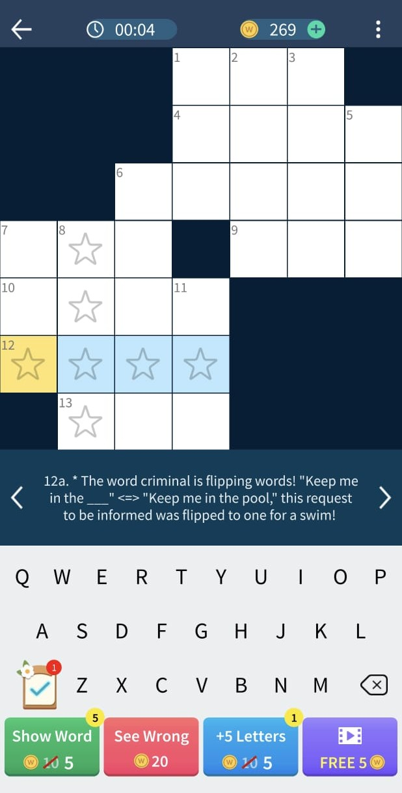

Operation Wordplay — 10-puzzle narrative pack.
Operation Wordplay — 10-puzzle narrative pack.
Operation Wordplay is a pack of narrative crossword puzzles in which the player chases Word Villain, a criminal set on interfering with communication by causing chaos in people's sentences. While I have worked on many narrative puzzles, this one stands out as my magnum opus among those I created. The pack also laid the foundation for future narrative packs that were created and shipped under my supervision.
Design objectives
- Create a balance between narrative pacing and level difficulty.
- At no point should the player give up because narrative clues are too difficult.
- The player should not lose track of the narrative because it is scattered across puzzles.
- The player should want to continue because they are invested in the story.
- Completion should not feel like a grind.
Design challenges
- Quantity and positioning of themed clues can increase difficulty, so their number and placement needed to follow existing guidelines.
- Character limits in clues required tight narrative.
- Narrative needed to follow a strict timeline—pacing was predetermined, and the story was built around it.
The solution

Story beats mapped to key puzzles in the pack.The beginning, middle, and end were predetermined at the 1st, 5th, and 10th puzzles. The story needed to be built around that structure.
The first puzzle introduces the criminal the player would chase. Puzzles 2–4 show what the villain is doing, establishing a need to arrest him. The fifth puzzle gives the player a lead to get closer, and the final puzzle is an exciting chase.
We had the story, but difficulty was still a concern. The first puzzle needed to be the easiest, with difficulty increasing as you progress—early puzzles hook players, later ones retain them.